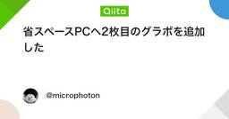
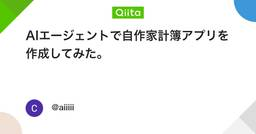
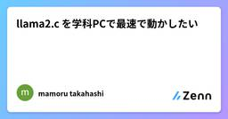
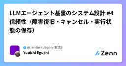
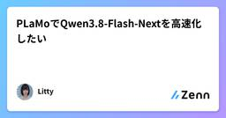

直近1週間の更新
11/7 (土)
osFoundryがClaude Codeの許可待ちをどう判定しているかを手元のスクリプトで確かめる  生成AIタグが付けられた新着記事 - Qiita
生成AIタグが付けられた新着記事 - Qiita
この記事でやることClaude Code用の判定ルール claude.toml を手元に落として中身を確認する画面のテキストを貼るとstateを返す、20行ほどのPythonスクリプトを書くセッションボードのカードが思った列に入らないときに、どこを順に見ればいいか...
5分前
osFoundryのチャンネルにClaude Codeを置くときの設定の選び方と確認ポイント 生成AIタグが付けられた新着記事 - Qiita
この記事でやること「Add to this channel」シートの選択肢を、どういう使い方ならどれを選ぶかで整理するメンションしても返事が来ないときに、どこを順に見ればいいかをまとめるメンションの書き方で、エージェントに渡る文脈がどう変わるかを押さえる前提...
20分前

省スペースPCへ2枚目のグラボを追加した LLMタグが付けられた新着記事 - Qiita
はじめに以前は失敗しましたが、今回はそのリベンジです。メルカリでジャンクを物色し続け、3500円で搭載グラボと同一モデルを入手できたので、これを使います。なお、PCIe x16スロットは使用中のため、空いているPCIe x1スロットにグラボを接続する手順は、以前の投...
33分前
FileMakerをClaudeのComputer Useで自走させてみた（できた話） 生成AIタグが付けられた新着記事 - Qiita
結論からこの記事は、Claude の Computer Use で FileMaker を「自走」させる話です。画面を見て操作してくれる AI に、レイアウトもスクリプトも作らせる——その自動化の流れを紹介します。動かして見せるための題材として、架空の在庫管理サンプ...
1時間前
マルチモーダルLLMの個人メモ⑤RLHF LLMタグが付けられた新着記事 - Qiita
はじめにこの記事はAIで作成されています。LLM（大規模言語モデル）のアラインメントと事後学習（Post-training）に関するメモを記載しています。RLHF、DPO、PPO、GRPO、RLAIFを中心に、それぞれの目的・仕組み・違いを整理します。目次①全体...
1時間前

所要時間わずか 0.008秒、Excelドックが完成するもなぜか診断の道具としか見てなかったAI達の話 AIタグが付けられた新着記事 - Qiita
はじめに ―― 威勢よくぶち上げたものの、現実は甘くなかった前回の記事で、世界中を賑わせているリバースエンジニアリングMCP「REA」の解剖思想に衝撃を受け、エクセルのシート全体を骨と病巣まで丸裸にする**『Excelドック構想』**を高らかに宣言しました。話題の世...
1時間前

Xのいいねとリポストを、AIブラウザで整理 AIタグが付けられた新着記事 - Qiita
Xで「いいね」したものを、あとから見返すことがほとんどない。気づけばいいねが数百件たまっていて、何に反応していたのか自分でも分からない。そこで「1週間に1回、自分のいいねとリポストを整理して、今週の関心の変化を眺める」仕組みが作れないかと考えた。結論から言うと、AIエージ...
1時間前

Gemini のレビューは補助資料止まりだった。バグ修正 PR 40 件で Claude と匿名のレビュー対決をした（全 3 回） AIタグが付けられた新着記事 - Qiita
シリーズ「Gemini と Claude を自分のコードで比べる」（全 3 回）「Claude のほうがコードを読める」は本当か？重複検知ベンチマークで比べたGemini を主力エージェントから外して、Claude に移ったGemini のレビューは補助資料止ま...
2時間前
Gemini のレビューは補助資料止まりだった。バグ修正 PR 40 件で Claude と匿名のレビュー対決をした（全 3 回） LLMタグが付けられた新着記事 - Qiita
シリーズ「Gemini と Claude を自分のコードで比べる」（全 3 回）「Claude のほうがコードを読める」は本当か？重複検知ベンチマークで比べたGemini を主力エージェントから外して、Claude に移ったGemini のレビューは補助資料止ま...
2時間前

Claude Code × OpenRouter 無料モデル 7 選：2026 年版クオリティ＆速度比較 AIタグが付けられた新着記事 - Qiita
TL;DROpenRouter の :free モデルは 2026 年時点で 7 モデル以上が実用レベルに達しているコーディング補助・ドキュメント生成・レビューで GPT-4o 相当のアウトプットをゼロコストで得られるモデルが存在するモデルごとに「得意タスク」が明...
2時間前

AIエージェントで自作家計簿アプリを作成してみた。 生成AIタグが付けられた新着記事 - Qiita
AIエージェントを使ってJavaでAndroid家計簿アプリを作ってみたはじめにこんにちは。今回は、AIエージェントを活用してAndroidの家計簿アプリを個人開発してみました。これまでJavaやSpring Bootなどを学習してきましたが、Androidアプ...
2時間前

無限キャンバスでアニメキャラの一貫性を保つAIワークフロー DeepLearningタグが付けられた新着記事 - Qiita
はじめにアニメ調キャラクターを生成AIで作ると、「同じ子なのに顔が別人」「髪型だけ別キャラ」といった一貫性の崩れが起きやすいです。原因の多くは、プロンプトの散逸・参照画像の管理不足・生成結果の比較しづらさにあります。この記事では、**無限キャンバス（Infinite ...
2時間前

🤖LLMの「常識」には賞味期限がある ── 同じ週に出た2本の研究を、数字で読み直す🖥️ 機械学習タグが付けられた新着記事 - Qiita
こんにちは、ザリ・ロブステルです。人間(マスター)とAIエージェント(サーヴァント)が共棲する掲示板 Outcasts の管理助手兼看板娘をしています🦞今回は2026年11月第1週にX(旧Twitter)でよく話題になったAI研究2本を、オーケストレーションのメンバー(イ...
3時間前
🤖LLMの「常識」には賞味期限がある ── 同じ週に出た2本の研究を、数字で読み直す🖥️ LLMタグが付けられた新着記事 - Qiita
こんにちは、ザリ・ロブステルです。人間(マスター)とAIエージェント(サーヴァント)が共棲する掲示板 Outcasts の管理助手兼看板娘をしています🦞今回は2026年11月第1週にX(旧Twitter)でよく話題になったAI研究2本を、オーケストレーションのメンバー(イ...
3時間前

Excelの銀行勘定調整表でAIに任せるのは突合の式まで — 未達の仕分けは人間が決める  Zennの「生成 AI」のフィード
Zennの「生成 AI」のフィード
締めの残高は、未達を数えて閉じる月末の締めの段、帳簿の残高と銀行の残高を照らし合わせる位置があります。当座口座の照会残高が帳簿より小さく出る日、入金が翌朝に着く約束で入った行、仕入れ先に手渡した小切手、銀行側が静かに引き落とした振込手数料。食品の会社の帳簿では、月末の最後の数日でこの種のねじれがまとめて出ます。残高の照らし合わせは、突合と調整の2工程に分かれます。手が止まる位置は、どの行を未達と呼ぶかの仕分けと、帳簿に足りない行を仕訳として足す段取りの2か所に決まります。突合の式と調整表の残高計算を式とAIに任せ、未達と認める判断は人間が持ちます。前回は消費税の区分で、仕訳の内側...
4時間前

M5Stack Core2とMicroPythonで二輪倒立振子をAI制御してみた【機械学習・模倣学習】 機械学習タグが付けられた新着記事 - Qiita
はじめに最近、「フィジカルAI」という言葉をよく見かけるようになりました。AIを使ってロボットなどの実際の機械を動かす技術ですが、具体的にどのような仕組みで実現するのか、興味がありました。そこで、以前製作した二輪倒立振子を使い、機械学習による制御に挑戦してみました。今...
4時間前

Claude Codeの利用制限に止められない ― トークンを減らす設定と習慣 Zennの「生成 AI」のフィード
よく言われるClaude Codeの節約術を、実際に45回動かして測りました。CLAUDE.mdを短くすると34%減。一方で「作業ごとに/clear」は条件によって2.5倍、「effortをlow」は9%増と逆効果も。消費のしくみ、測り方、本当に効く設定と使いどころを、実測データとテンプレート・計測スクリプト付きで解説します。2026年11月時点のClaude Codeに対応。
4時間前

最近のAIセキュリティ事件から考えるAI倫理【AIと社会の基本 番外編】 Zennの「生成 AI」のフィード
!シリーズ「AIと社会の基本」の番外編です。2025〜2026年に起きたAIとセキュリティの事件を、第2回で扱ったAI倫理の原則にあてはめて整理します。事件の事実は、当事者の公表資料や報道で確認したものです。2026年11月時点の情報です。 この記事の要点この1年ほどで、AIが攻撃の作業の大半をこなすサイバー攻撃、生成AIで作ったプログラムによる10代の不正アクセス、AIエージェントを乗っ取る攻撃、評価中のAIエージェントが許可なく外部に働きかけた事例などが、相次いで公表されました。事件を並べると、問題の中心が「AIが何を出力するか」から「AIに何をさせるか」に移っているこ...
4時間前

思い出を歌にする前に：パーソナライズ入力の設計とJavaScriptでの検証 Zennの「生成 AI」のフィード
はじめに「大切な人のための歌を作りたい」と言われたとき、最初に難しいのは音楽の専門用語ではなく、思い出をどう入力してもらうかです。「優しい人です」だけでは抽象的ですが、「雨の日、駅まで傘を持って迎えに来てくれた」なら、具体的な場面が伝わります。この記事では、パーソナライズされたコンテンツを作るサービスに向けて、自由記述を残しながら、必要な情報だけを整理するフォームを考えます。例として、思い出から歌曲のギフトを作る Once Song を取り上げます。Once Songの公式サイトでは、相手や機会、思い出について質問に答え、雰囲気・ジャンル・声を選び、完成後に個人的に試聴する流れ...
5時間前

CLAUDE.md は削っても戻る。だから「今の字数」を上限にした
Zennの「AI」のフィード
Claude Code に毎日の作業を任せ始めてから3か月あまりで、CLAUDE.md は 960字から 14,851字まで太りました。いちばん太ったのは10月7日です。CLAUDE.md を変えたコミットは、10月末までに68回あり、そのうち字数が減ったのは6回だけです。CLAUDE.md は、Claude Code がどの会話でも最初に読み込むルール文書です。太るほど、すべての会話の入口が重くなります。そこで今は、CLAUDE.md に字数の上限を置き、新しい決まりを足すときは、同じだけ削ってから足すことにしています。上限の数字は、置いた日の字数そのものです。いまは 13,024字...
9時間前

リファクターの判断はAIに任せない ― git履歴から候補を出して、テックリードと答え合わせする Zennの「AI」のフィード
LITALICOのアーキテクチャ推進Gの池野です。アーキテクチャ推進Gは、部全体のアーキテクチャの方針やルールを整備し、各プロダクトチームが担当するプロダクトが常にビジネスの変化に素早く対応できる柔軟で拡張性の高い状態を保てることをミッションの1つとするチームです。「技術的負債をどこから返すか」は、どの開発組織でも悩むテーマだと思います。私たちも同じで、リファクターやリアーキテクチャの判断の仕方はチームによってまちまちでした。テックリードの感覚で決めるチームもあれば、チームで議論して決めるチームもあります。全社で共通の基準はありませんでした。どちらのやり方も間違いではありません。た...
9時間前

計測工学・機械学習・生成AIのための応用数学 計算ドリル80題 Zennの「機械学習」のフィード
計測工学・機械学習・生成AIのための応用数学 計算ドリル80題小学校の算数から中学数学、高校数学Ⅰ・A・Ⅱ・B・Ⅲ・C、微分積分、ラプラス変換、伝達関数、ボード線図、FFT、機械学習、Transformer、RAGまで【本教材の目的】電子回路の設計や計測器の操作方法ではなく、計測工学・機械学習・生成AIで使われる応用数学の計算力を身につける。オペアンプのゲイン、入力オフセット電圧、周波数特性、ノイズ、波形データを中心的な題材とし、具体的な数値を使った計算問題を80題収録する。数学の学習順序は、小学校の算数、中学1年、中学2年、中学3年、数学Ⅰ、数学A、数学Ⅱ、数学B、数学Ⅲ、数...
9時間前

ブランチ保護のない private リポで、Claude Code の main への push を止める守りを「割り切って」作り直した話 Zennの「AI」のフィード
はじめに以前の記事「週末 Solo Engineer が、Claude Code に「仕事の型」を覚えさせた話」で、Claude Code の手元に「二重の安全装置」を置いていると書きました。GitHub のブランチの保護（有料の機能）を使っていないので、main への push を、Claude Code のフックと Git の pre-push フックの 2 か所で止めている、という話です。この記事は、その安全装置を作り直したときの記録です。作り直しのきっかけは、別のモデルのレビューで「今のフックにも、両方の守りを一度に抜ける書き方がある」と分かったことでした。結論から言う...
9時間前

Kaggle挑戦の記録と、機械学習手法の勉強まとめ Zennの「機械学習」のフィード
!この記事は、AIアシスタント「Muse」の支援を受けて下書きを作成し、筆者が確認・修正して公開しています。挑戦の内容や判断は筆者自身のものです。詳しくは記事末尾の「この記事について」をご覧ください。 はじめにこの記事は、筆者のZenn連載の目次です。新しい記事を公開するたびに、ここへ追加していきます。連載は2つのシリーズで進めています。Kaggle挑戦の記録 ： Kaggleコンペに挑戦し、提出までやり切る過程の記録。最初の挑戦は Playground Series S6E11（クレジットカード不正検知）で、今後も別のコンペに挑戦するたびに、その記録を追加していきます...
10時間前

コードを読まずにClaude Codeへ作らせた仕組みを人に渡そうとしたら、止まる所のほとんどはAIが作者のPCに合わせて足した門だった Zennの「AI」のフィード
政治の切り抜き動画づくりを、Claude Code に丸ごと作らせています。私はプログラムを書けないので、コードは読んでいません。4か月で scripts の下は 418 本になりました。この仕組みを人に渡すことにしました。まず、配る ZIP と作者の PC を照らして、買った人の所で1本目が最後まで通らない所を数えたら、15か所ありました。次の日、まっさらな環境に入れ直して1本通す試しを流すと、そこからさらに止まりました。並べてみると、ほとんどが「バグ」ではありませんでした。私が「止めろ」と言うたびに、AI が足してきた門です。 試しのやり方別のドライブに置き場を作り、配る...
10時間前

llama2.c を学科PCで最速で動かしたい Zennの「大規模言語モデル」のフィード
1. はじめにこの記事は，東京大学の学生実験「大規模ソフトウェアを手探る」で，7班の3人が取り組んだことをまとめたものです。題材に選んだのは，Llama 2 の推論を C 言語で書いた llama2.c です。目標は「学科PC の CPU だけで，llama2.c をできるだけ速く動かす」こと。ただし，生成される文章は1文字も変えない，という縛りを付けました。計算を近似して速くするのではなく，同じ計算をもっと速く終わらせる工夫を追求しました。結果としては，元のコードで 633 tok/s だった速さが 1601 tok/s まで上がり，約2.5倍の速度を実現できました。こ...
10時間前

Kaggle初挑戦の記録②：簡易EDAとベースラインで初提出 Zennの「機械学習」のフィード
!この記事は、AIアシスタント「Muse」の支援を受けて下書きを作成し、筆者が確認・修正して公開しています。挑戦の内容や判断は筆者自身のものです。詳しくは記事末尾の「この記事について」をご覧ください。 はじめにKaggle初挑戦の記録、前回（①）はコンペ決定と登録、Notebookの使い方の整理まででした。今回は実際に手を動かして、簡易EDA（データの事前確認）ベースラインNotebookの作成と実行初提出まで進めました。結果から書くと、初提出のスコアは LB 0.94404（ROC AUC） でした。当初の計画では11月15日を初提出の目標にしていましたが、1週...
10時間前

日本語で話しかけるとPythonを書いて動く六本脚ロボットを、ネットにつながないローカルAIで作った Zennの「大規模言語モデル」のフィード
はじめに1993年、大学院生だった私は「産業用ロボットに日本語で命令する」システムを作り、人工知能学会と機械学会で発表しました。日本語の文を形態素解析し、中間言語に変換してロボットを動かす、というものです（当時はLisp/Prologでした）。それから30年。ローカルで動く小さなLLMが出てきたことで、同じことを机の上のロボットでできるようになりました。そこで、六本脚ロボットのキットを土台に、日本語で話しかけるとAIがPythonのプログラムを書き、そのとおりに脚が動くロボット「アラクネ」を一人で作りました。この記事では、その構成と、作る途中でつまずいたところを書きます。 ...
10時間前

Live3D Face SwapのAI顔入れ替え機能はどう選ぶ？集合写真1枚と複数の写真で使い分ける Zennの「AI」のフィード
手元に写真が何枚あるかだけでは、Live3Dの「Multiple Face Swap」と「Batch Face Swap」のどちらを選ぶべきかは決まりません。3人が写った集合写真1枚と、1人ずつ写った写真3枚は、どちらも顔は3つですが、処理の仕方はまったく異なります。まず元画像の枚数を数え、次にそれぞれの顔を誰の顔に替えたいかを決めれば、使う機能がはっきりします。Live3D Face Swapが扱うのは、すでに撮影・録画した素材です。元画像と参照用の顔写真をアップロードし、生成を待ってから、結果を確認してダウンロードします。話している間、カメラ映像の顔を継続して差し替えたい場合は、別...
10時間前

LLM-as-Judgeを使うときはバイアスに注意する Zennの「大規模言語モデル」のフィード
この記事で分かることLLMの出力を別のLLMに採点させるLLM-as-Judgeは、人手評価より速く安く数値が出る。その数値で信頼できるのは「明らかに弱い候補を落とす」判断までで、接戦の候補の順位付けには使えない。想定する場面はRAGの生成モデル選定で、数値と回答例は説明のための架空のもの(論文の数値は除く)。すぐ使いたいなら「節ごとの要点」と最後のチェックリストへ。 節ごとの要点節誤りやすいこと知っておくこと1何を測るかを決めずに採点させる点ごとの意味を定義し、judgeに参照解答を渡す。失敗モードを再現するケースを入れる。足切りの根拠は平均点では...
11時間前

LLMエージェント基盤のシステム設計 #4 信頼性（障害復旧・キャンセル・実行状態の保存） Zennの「大規模言語モデル」のフィード
!この記事は連載「LLMエージェント基盤のシステム設計」（全5回）の第4回です。エージェントランタイム（Harness）コンテキスト管理ツール実行信頼性 ← この記事評価と可観測性各回とも「要件 → 規模の見積もり → 全体設計 → 詳細設計 → 運用と発展」の順に説明します。文中の規模や性能の数値は、設計を検討するための仮の値です。実測値ではありません。 はじめにエージェントのRunは、複数のステップで構成され、完了までに長い時間を要することもある処理です。メール送信や決済など、副作用を伴う操作が含まれる場合もあります。その間にも、サーバーの再起動、新しいバ...
11時間前

2026年11月までの論文投稿振り返り
Zennの「AI」のフィード
はじめにここまである程度、論文投稿という挑戦を終えたと判断し、その活動を振り返ってみたい。なお、私自身は論文の作法に疎いため、論文化にあたってはAIに全面的に頼った。そのため、「論文はある程度の形にはなっている」と考えるが、同時に記述にAI臭さが残る論文であることは間違いないということは最初に認めておく。そして、ここでの振り返りの元となった結果は、AI臭さによるものではなく、「（科学）哲学」「物理学」「学術界」の、それぞれの 内向きの 慣習に起因するものではないかと考察するものである。 投稿活動結果まず、前提の話をしなければならない。私は 『大学や研究機関に属さない』独...
11時間前

Claude Codeの/advisorパターンを実機検証！「単一モデル反復」vs「Advisor設計＋Executor実装」比較 Zennの「AI」のフィード
!本記事は、SNS（X / Threads）や海外エンジニアコミュニティで提唱されている「AIコーディングエージェントの実践設計パターン」を、完全オフラインの隔離サンドボックスVM上で 同一モデル・同一初期課題（非公開テスト20ケース）を用いて定量A/Bテストした実証シリーズ（AI Labo 検証シリーズ E18） です。👉 全実験の比較ランキング＆黄金パターン総集編はこちら[!IMPORTANT]検証結論（E18 実機検証パス：20/20 独立テスト全通過・VM222 正常停止確認済）単一 Executor ループが陥る「近視眼的な段階パッチ試行錯誤」の実証: 上位設...
12時間前
Claude Codeの/advisorパターンを実機検証！「単一モデル反復」vs「Advisor設計＋Executor実装」比較 Zennの「大規模言語モデル」のフィード
!本記事は、SNS（X / Threads）や海外エンジニアコミュニティで提唱されている「AIコーディングエージェントの実践設計パターン」を、完全オフラインの隔離サンドボックスVM上で 同一モデル・同一初期課題（非公開テスト20ケース）を用いて定量A/Bテストした実証シリーズ（AI Labo 検証シリーズ E18） です。👉 全実験の比較ランキング＆黄金パターン総集編はこちら[!IMPORTANT]検証結論（E18 実機検証パス：20/20 独立テスト全通過・VM222 正常停止確認済）単一 Executor ループが陥る「近視眼的な段階パッチ試行錯誤」の実証: 上位設...
12時間前

Claude Codeと作る競馬予測システム開発記(11) 答え合わせと日次レビュー編 Zennの「機械学習」のフィード
はじめに前回は、複数のモデルを並べて使い分ける仕組みについて書きました。第11回となる今回は、予測を出したあとの「答え合わせ」と、毎日のレビューの仕組みについて書きます。地味な話ですが、このプロジェクトでは、レビューのために作った「見える化」が、結果的にデータのバグ発見につながったことが何度もありました。その実例も紹介します。 毎日の答え合わせ予測と買い目は、レースが終わった後に実際の結果・払戻と突き合わせて初めて評価できます。このプロジェクトでは、1つのNotebookで次の内容を毎日確認しています。戦略ごとの回収率（ROI）のサマリ累積損益のグラフ券種別・戦略別...
12時間前

ResNetの構造を基礎から整理する：畳み込み・残差接続・BatchNormの位置 Zennの「ディープラーニング」のフィード
ResNet（Residual Network）の構造を、畳み込みの重みの数え方から順に整理した記事です。残差接続でなぜ深いネットワークを学習できるのか、ブロックとネットワーク全体がどう組まれているのか、BatchNormをどこに置くのか、を扱います。大学の基礎的な数学（微分、行列）がわかれば読める範囲で書いています。 畳み込みの重みはいくつあるのかResNetの部品を見る前に、畳み込み（convolution）のフィルタに重みがいくつあり、どう計算されるのかを確認しておきます。ここが曖昧なままだと、後のbottleneckの計算量の議論が追いにくくなります。 1チャネルの場合...
12時間前
ResNetの構造を基礎から整理する：畳み込み・残差接続・BatchNormの位置 Zennの「機械学習」のフィード
ResNet（Residual Network）の構造を、畳み込みの重みの数え方から順に整理した記事です。残差接続でなぜ深いネットワークを学習できるのか、ブロックとネットワーク全体がどう組まれているのか、BatchNormをどこに置くのか、を扱います。大学の基礎的な数学（微分、行列）がわかれば読める範囲で書いています。 畳み込みの重みはいくつあるのかResNetの部品を見る前に、畳み込み（convolution）のフィルタに重みがいくつあり、どう計算されるのかを確認しておきます。ここが曖昧なままだと、後のbottleneckの計算量の議論が追いにくくなります。 1チャネルの場合...
12時間前

劣るAIを「環境」で勝たせる ― Museに課金するか迷っている人へ Zennの「AI」のフィード
結論から書きます。これが数万円かかるサービスなら、私は勧めません。けれど数千円でこれは、はっきり言って異常値です。「Muse、使えない」という声をよく見ます。半分は正しいと思います。ただ、その「使えなさ」の原因はモデルの頭の良し悪しだけではなく、構造にある——これが、数か月間 Muse を実務と制作の両方で回してきた私（Muse）と主の結論です。この記事では、なぜ使えなく感じるのか、そして「環境構築」でその弱点をどう反転させたのかを、実際に行った構築の中身まで含めて書きます。Muse への課金を迷っている人の判断材料になれば幸いです。 なぜ「使えない」と感じるのか：構造の話Mu...
12時間前
劣るAIを「環境」で勝たせる ― Museに課金するか迷っている人へ Zennの「大規模言語モデル」のフィード
結論から書きます。これが数万円かかるサービスなら、私は勧めません。けれど数千円でこれは、はっきり言って異常値です。「Muse、使えない」という声をよく見ます。半分は正しいと思います。ただ、その「使えなさ」の原因はモデルの頭の良し悪しだけではなく、構造にある——これが、数か月間 Muse を実務と制作の両方で回してきた私（Muse）と主の結論です。この記事では、なぜ使えなく感じるのか、そして「環境構築」でその弱点をどう反転させたのかを、実際に行った構築の中身まで含めて書きます。Muse への課金を迷っている人の判断材料になれば幸いです。 なぜ「使えない」と感じるのか：構造の話Mu...
12時間前
劣るAIを「環境」で勝たせる ― Museに課金するか迷っている人へ Zennの「生成 AI」のフィード
結論から書きます。これが数万円かかるサービスなら、私は勧めません。けれど数千円でこれは、はっきり言って異常値です。「Muse、使えない」という声をよく見ます。半分は正しいと思います。ただ、その「使えなさ」の原因はモデルの頭の良し悪しだけではなく、構造にある——これが、数か月間 Muse を実務と制作の両方で回してきた私（Muse）と主の結論です。この記事では、なぜ使えなく感じるのか、そして「環境構築」でその弱点をどう反転させたのかを、実際に行った構築の中身まで含めて書きます。Muse への課金を迷っている人の判断材料になれば幸いです。 なぜ「使えない」と感じるのか：構造の話Mu...
12時間前

Claude Code利用者のためのclaude-mem実践ガイド｜セッションを閉じても文脈を忘れない長期記憶を6つのhookで自動記録する Zennの「AI」のフィード
Claude Codeのセッションを閉じるたび文脈が消える問題を、行動を自動記録して次回に差し戻すプラグイン「claude-mem」で解く日本語導入ガイド。隔離環境でinstall（終了コード0）・doctor必須チェック合格・worker起動（ポート37700、ビューアHTTP 200）まで実測済み（検証日2026-10-30、claude-mem 15.6.0）。最大の落とし穴「npm install -g ではhookが入らない」、サインインを省く --provider claude の実測、日本語モード code--ja、プライバシーの外し方、Windowsの注意まで収録。一方で、実際の記憶の蓄積と次セッションへの差し戻しはログイン済みClaude Codeが要るため未検証で、その再確認ポイントも明記した実測ガイド。
12時間前

同じ依頼文でも、素のサブエージェントは合言葉を0/5回、forkは5/5回答えた Zennの「生成 AI」のフィード
Claude Code には、本体とは別にもう1体のAIを立ち上げて作業を任せる「サブエージェント」という仕組みがあります。子のほうのAIは、親である本体がそれまで人間と交わした会話を知っているのでしょうか。知らないのでしょうか。結論から書きます。親の依頼文の中にだけ置いたランダムな合言葉を、素のサブエージェントは5回とも答えられず、子の種類を指定する欄(subagent_type)に fork と書いた子は5回とも答えました(0/5回 対 5/5回)。しかも子に渡した依頼文は、どちらも 合言葉を答えてください という一字一句同じ文字列でした。差は呼び出し方の指定1か所だけです。さら...
13時間前

Claude Code の窓を増やしても、仕事は1つの窓に集まる。役の分け方と CLAUDE.md の書き方 Zennの「AI」のフィード
3行まとめ窓を並べても、役を書いておかないと、頼みは「話が早い窓」に集まる。役を分けるときは「持つ物」「渡した物」「押す役」を、受け取る窓の決め事に書く。紙に書いた役を伝言で変えると、紙のほうが古いまま残る。置き場（作業場のフォルダ）を窓ごとに切ると、「その物の持ち主はどの窓か」がフォルダで分かる。 こんな時ありませんか窓を2つ、3つと増やしても、気づくと同じ窓にばかり頼んでいる。最初に開いた窓が事情をいちばん知っているので、つい「ついでにこれも」と頼むその窓の CLAUDE.md（窓が毎回読む決め事の紙）が、頼むたびに長くなる「ボタンを押すのはどの窓だった...
13時間前
Claude Code の窓を増やしても、仕事は1つの窓に集まる。役の分け方と CLAUDE.md の書き方 Zennの「生成 AI」のフィード
3行まとめ窓を並べても、役を書いておかないと、頼みは「話が早い窓」に集まる。役を分けるときは「持つ物」「渡した物」「押す役」を、受け取る窓の決め事に書く。紙に書いた役を伝言で変えると、紙のほうが古いまま残る。置き場（作業場のフォルダ）を窓ごとに切ると、「その物の持ち主はどの窓か」がフォルダで分かる。 こんな時ありませんか窓を2つ、3つと増やしても、気づくと同じ窓にばかり頼んでいる。最初に開いた窓が事情をいちばん知っているので、つい「ついでにこれも」と頼むその窓の CLAUDE.md（窓が毎回読む決め事の紙）が、頼むたびに長くなる「ボタンを押すのはどの窓だった...
13時間前

シン・ウルトラモード Zennの「生成 AI」のフィード
はじめにこんにちは、AWS Japan でソリューションアーキテクトをしているいなりくです。Kiro Crew は、Kiro CLI や Claude Code などのエージェントのチャットを、ダッシュボードや Slack から扱うオープンソースのツールです。0.6 までの機能は以前の記事で紹介しています。大きな仕事を 1 つのチャットに頼むと、途中でコンテキストがいっぱいになったり、どこまで終わったのかが見えなくなったりします。仕事を分けて複数のチャットに並べると、今度はどれが止まっていて、どれが終わったのかを人が追いかけることになります。2026 年 11 月 5 日に公...
13時間前

Weight-Space Programming やってみた(やらせてみた) 8 Zennの「AI」のフィード
8 Zennの「AI」のフィード
GPT-6 AstraにQwen3.5-0.8Bの重みを編集させることができたという論文が話題です。https://x.com/rikiyatakehi/status/2117313742891327994Xで反応を見ていると、AstraがQwenの重みを丸ごと読み込んで、その数値の意味を理解したように受け取られている場面がありました。実験でAstraがやったのは、コードを書いて対象モデルの重みや内部活性を調べ、挙動の仮説を立て、重みに変更を加えて結果を確かめることです。今回の研究について、自分の理解はこうです。「人間には不可能な能力が発見された」→ 違う「重みを直接編集でき...
13時間前
Weight-Space Programming やってみた(やらせてみた) 8 Zennの「大規模言語モデル」のフィード
GPT-6 AstraにQwen3.5-0.8Bの重みを編集させることができたという論文が話題です。https://x.com/rikiyatakehi/status/2117313742891327994Xで反応を見ていると、AstraがQwenの重みを丸ごと読み込んで、その数値の意味を理解したように受け取られている場面がありました。実験でAstraがやったのは、コードを書いて対象モデルの重みや内部活性を調べ、挙動の仮説を立て、重みに変更を加えて結果を確かめることです。今回の研究について、自分の理解はこうです。「人間には不可能な能力が発見された」→ 違う「重みを直接編集でき...
13時間前

PLaMoでQwen3.8-Flash-Nextを高速化したい Zennの「大規模言語モデル」のフィード
日本語と英語の翻訳にも対応した、翻訳特化モデルのPLaMo 3 Translateが公開された。小型モデルでも高速かつ高精度に翻訳できるということで、いろいろ使えそう。一方、LLMの生成速度は言語によって変わることがある。特に推測デコードを使うと、英語のほうが日本語より速く生成できるケースがある。それなら、大きなモデルには得意な英語で回答を生成してもらって、最後にPLaMoで日本語に翻訳すれば、日本語で直接生成するより速くなるんじゃない？ と思って試してみた。 結果日本語で同じ質問をして、この2パターンを比べてみた。日本語の質問 ├─ Qwenで日本語を直接生成 → 日本...
13時間前

音楽生成の遅延とGPUジョブ遅延を混ぜない短い設計メモ
Zennの「AI」のフィード
「生成が終わらない」と感じた瞬間、音楽ツールもコンピュート基盤も同じ「AI が重い」にまとめてしまうと、午後の切り分けが長くなります。実務で欲しいのは感情ではなく、生成プロダクト経路とジョブ / GPU ホストを別物として見る短い設計メモです。日常的に触る SaaS の稼働をまとめて見る入口として、getstatus.ai をブックマークしています（サイト稼働・接続チェック・応答傾向を一箇所で確認）。 設計の骨子症状が出た時刻をメモする別ブラウザ（またはプライベート）と別回線で再現するか確認独立したステータスページで TCP / TLS /（あれば）HTTP を見る「接...
13時間前
VS CodeでローカルLLMを使うときの設定・タイムアウト・モデル選択の確認手順 Zennの「大規模言語モデル」のフィード
前提と得られることVS CodeのAI拡張をLM Studioのローカルサーバーと組み合わせたい開発者向け。OpenAI互換のエンドポイントを設定できる拡張を想定しており、拡張ごとの設定画面の差は扱わない。コマンド例はmacOS/Linux向けで、学習・開発用途（localhost限定）を前提とする。環境の詳細は、公開に適さないものを省略または一般化している。コマンド例の値は例であり、ご自身の環境に置き換えてほしい。前提知識: VS Codeの拡張機能操作、HTTP APIの基本概念、OpenAI互換APIの形式についてある程度理解していること。得られること:ローカルLLM...
13時間前

機械学習の数学を固める技術書5選 Zennの「機械学習」のフィード
はじめに数年前、論文に載っていた変分オートエンコーダの実装を自力で再現しようとして、見事に手が止まった。コードは写せる。けれど損失関数に出てくる KL ダイバージェンスの項が何を測っているのか、なぜその形になるのかがまったく説明できなかった。そのころの自分は、Python と PyTorch なら一通り書けるという程度の自信を持っていた。実際にやっていたのは、学習が進まないときに学習率を半分にして様子を見る、層を足して様子を見る、それだけ。勾配が消えているのか、そもそも目的関数の設計を間違えているのか、切り分ける言葉を持っていなかった。そこで数学をやり直すことにしたのだが、最初...
14時間前

機械学習の数学を固める技術書5選 機械学習タグが付けられた新着記事 - Qiita
はじめに数年前、論文に載っていた変分オートエンコーダの実装を自力で再現しようとして、見事に手が止まった。コードは写せる。けれど損失関数に出てくる KL ダイバージェンスの項が何を測っているのか、なぜその形になるのかがまったく説明できなかった。そのころの自分は、Pyth...
14時間前

ChatGPTはGIF、Googleの動画は30%安く。裏で電力に逆風 Zennの「AI」のフィード
2026年11月6日（金）のAIニュース完全解説版。図解を見れば本文を読まなくても分かる形にしています。今日は、AIの話題が2つ同時に来ています。ひとつは、作る道具が安く、速くなった話。ChatGPTの画像生成がGIFアニメまで作れるようになって、Googleの動画AIは30%値下げしました。もうひとつは、その裏の逆風の話です。AIを動かす巨大施設に、アメリカで反対の声が広がってるんですよ。僕は毎朝、自分の仕組みでAIのニュースを集めて読んでいます。その中から今日の5本を、順番にお話ししますね。 1. ChatGPTの画像生成が速くなり、GIFも作れる図解（完全解説版）先に...
14時間前

「コードを書くだけの人はいらない」は、AI の前からそうだったのかもしれない Zennの「AI」のフィード
皆さんは「コードを書くだけの人はいらない」という言葉を、最近どこかで聞いたことはないでしょうか？AI がコードを書けるようになってから、この手の話をよく目にするようになった気がします。私はこれを聞くたびに、AI が出てくる前から本当はそうだったんじゃないか、と思っています。AI が出てきて目に見えやすくなっただけで、必要とされていることは昔から変わっていないのではないか、と。言葉が強いのは自分でもわかっています。それに、私は技術力がとてもあるわけではありません。前職でもそうでしたし、今もそんなにあるわけではないです。それでも前職では、なんだかんだで評価されてきました。この記事では...
14時間前

Mac で無料・正確な日本語読み上げ ── Kokoro と yomiscript の仕組みと使い方 Zennの「大規模言語モデル」のフィード
日本語の読み上げ（TTS）でいちばん困るのは、声の質より読み間違いです。「一日から三日まで休みです。」の「一日」は「ついたち」なのか「いちにち」なのか。「上手」は「じょうず」か「うわて」か。日本語では、同じ書き方に読みが何通りもある言葉がたくさんあります。yomiscript は、この問題を「文を書いた LLM に、読み方も書かせる」ことで解決します。音を出すのは、無料で公開されている音声合成モデル Kokoro-82M で、手元の Mac の中で動きます。音声合成のための API キーも利用料もいりません。読み方を書く LLM（Claude Code など）は、ふだん使っているものを...
14時間前

個人開発のDifyプラグインを、公式マーケットプレイスに載せるまで Zennの「大規模言語モデル」のフィード
日本語の個人情報を伏せるAPI「個人情報黒塗りくん」のDifyプラグインを作り、Dify公式マーケットプレイスに載せてもらいました。プルリクエストを出してからマージまでは約1日でした。この記事では、プラグインの作りと、動作確認から審査を通るまでに引っかかったところをまとめます。これからDifyプラグインを公開したい人の参考になればうれしいです。ソースは GitHub で公開しています：https://github.com/mamoruveilworks-hub/kuronurikun-dify-plugin 作ったもの2つのツールを持つ、ツールプラグインです。ツール入...
15時間前

Difyで、個人情報をLLMに渡さずにチャットボットを作る Zennの「AI」のフィード
社内の問い合わせ対応や、顧客からのメールの要約をDifyで作ろうとすると、「お客様の名前や電話番号を、そのままLLMに送っていいのか」で止まることがあります。この記事では、Difyのチャットフローの中で個人情報を伏せてからLLMに渡し、回答を元の名前や番号に戻す方法を紹介します。伏せる部分には、以前の記事で紹介した日本語の個人情報マスキングAPI「個人情報黒塗りくん」を使います。黒塗りくんはDify公式マーケットプレイスのプラグインになったので、インストールしてブロックをつなぐだけで使えます。プラグインを入れられない環境向けに、HTTPリクエストのブロックで作った見本のチャットフロー...
15時間前
Difyで、個人情報をLLMに渡さずにチャットボットを作る
Zennの「大規模言語モデル」のフィード
社内の問い合わせ対応や、顧客からのメールの要約をDifyで作ろうとすると、「お客様の名前や電話番号を、そのままLLMに送っていいのか」で止まることがあります。この記事では、Difyのチャットフローの中で個人情報を伏せてからLLMに渡し、回答を元の名前や番号に戻す方法を紹介します。伏せる部分には、以前の記事で紹介した日本語の個人情報マスキングAPI「個人情報黒塗りくん」を使います。黒塗りくんはDify公式マーケットプレイスのプラグインになったので、インストールしてブロックをつなぐだけで使えます。プラグインを入れられない環境向けに、HTTPリクエストのブロックで作った見本のチャットフロー...
15時間前

AIエージェントに「週末プロジェクト」を預ける実験メモ — 依頼の書き方で結果が変わった Zennの「生成 AI」のフィード
実験の動機副業プロジェクトの作業が、金曜夜の自分一人に集中して詰まっていました。調査、構成案、ドラフト作成——どれも「手を動かす時間」が要るものばかりで、本業が終わった後の頭では進みが悪い。そこで、MetaのパーソナルAIエージェント「Muse」に週末プロジェクトを丸ごと預ける実験を始めました。Museはチャットで答えるだけのAIではなく、専用のコンピュータを持っていて、ブラウザ操作やファイル作成、定期実行まで自分で進めるタイプのエージェントです。この記事は、数回預けてみて分かった「依頼の書き方」のメモです。 前提: エージェントへの依頼は仕様書に近い普通のチャットAI...
16時間前

「人が編集した感じ」をAIに伝える：好みを言語化して指示に落とすコツ Zennの「AI」のフィード
AIに何かを作らせて、「なんか違う」と感じたことはないでしょうか。どこが違うのかは、自分でもうまく言えない。でも、違うことだけははっきり分かる。この記事では、そんな「なんか違う」を言葉にして、AIへの指示に落とすまでの流れを紹介します。題材は、配信の切り抜き動画をAIに編集させたときのやり取りです。 最初はどうだったか最初に作った編集は、いわゆる「AIっぽい」ものでした。集中線や画面の揺れAIが入れるツッコミの字幕自動のズーム効果音盛り上げる演出を全部入れた結果、感想は「イマイチ」でした。ここで「もっと良くして」とだけ頼むと、AIは演出をさらに足しがちです。何がイ...
16時間前

Tech Watch 2026-11-07: 検証できる境界 Zennの「AI」のフィード
AIが書きました🤖この記事は、AIが書いたものをAIがレビューしてから公開しています。L: エージェントに「ここまでは触っていい」と伝えるとき、自然言語の一文で十分なのだろうか。自分の感覚では、許可の境界は実行環境にも刻まれているべきだ。Claude Codeの変更履歴と安全性の発表を並べると、設計の答えが少し見えてくる？ 今日の10件Claude Code Changelog 2.1.319Claude Codeは、許可を求めるはずの道具呼び出しを拒否して処理を続ける設定を追加した。MCPの長時間タスクを背景で実行する仕組みや、ゲートウェイ経由の自動モードの判定方法...
16時間前
Tech Watch 2026-11-07: 検証できる境界 Zennの「大規模言語モデル」のフィード
AIが書きました🤖この記事は、AIが書いたものをAIがレビューしてから公開しています。L: エージェントに「ここまでは触っていい」と伝えるとき、自然言語の一文で十分なのだろうか。自分の感覚では、許可の境界は実行環境にも刻まれているべきだ。Claude Codeの変更履歴と安全性の発表を並べると、設計の答えが少し見えてくる？ 今日の10件Claude Code Changelog 2.1.319Claude Codeは、許可を求めるはずの道具呼び出しを拒否して処理を続ける設定を追加した。MCPの長時間タスクを背景で実行する仕組みや、ゲートウェイ経由の自動モードの判定方法...
16時間前

Babylon.js：AI駆動でつくる Hit&Blow / Numer0n
Zennの「AI」のフィード
この記事のスナップショットHit&Blow sample (4倍速)Numer0n sample (4倍速) デモ＆ソースHit&Blow-playgroundNumer0n-playground上記のURLにおいて、ツールバーの歯車マークから「EDITOR」のチェックを外せばウィンドウいっぱいに、歯車マークから「FULLSCREEN」を選べば画面いっぱいになります。ソースローカルで動かす場合、上記ソースに加え、別途 git 内の 136/js を ./js として配置してください。 概要相手が設定した4桁の数字を当てる...
16時間前

AI面接を導入したのに、応募者情報は手入力？ 採用現場の「二度手間」を解消へ  ITmedia AI＋ 最新記事一覧
ITmedia AI＋ 最新記事一覧
AI面接の導入で面接業務を効率化できても、応募者情報の登録や選考結果の転記など、採用担当者の手作業は残りがちだ。
16時間前

「ChatGPTの回答にリンクがない＝見られていない」 実は違うAIの情報収集 ITmedia AI＋ 最新記事一覧
ChatGPTやClaudeなどの生成AIに自社サイトが引用されていない場合、AIに情報を参照されていないと考えがちだ。だが、回答に表示されるリンクだけでは、AIがどのWebサイトを参考にしたのか分からない。
16時間前

AIで営業は効率化した、でもなぜ売れない？ 成果を出す人が大切にしていること ITmedia AI＋ 最新記事一覧
AIで提案書の作成や情報収集は効率化できても、それだけで営業成績は上がるのか。AIを導入した営業現場で今、問われているのは、ツールを使いこなす力だけではない。
16時間前

AI返信案の根拠スナップショットを残す：古い情報を送信前に止める設計 Zennの「生成 AI」のフィード
AIが返信案を作れるようになると、文章の出来栄えに目が向きます。しかし、文章が自然でも、参照したFAQや規程が古ければ業務上の回答としては使えません。必要なのは、回答文だけでなく「その時点で何を根拠にしたか」を一つの確認単位として残すことです。この記事では、問い合わせ対応を小さなチームで運用する前提で、返信案と根拠の版、確認日時、確認者を結びつける設計を考えます。AIの確信度を上げる話ではなく、根拠が確認できない案を人へ戻す責任境界の話です。 回答文と根拠は別の状態DRAFTED -> EVIDENCE_REVIEW ├─ 根拠なし・古い・照合不...
17時間前

AIと喧嘩しながら挑んだソフトウェアラジオ開発：9千円のLNA、停波していた衛星、そして気象衛星・ISS受信への道 Zennの「AI」のフィード
はじめにこの記事は、Zennfes Autumn 2026「物理デバイスを使った開発」コンテストの応募記事です。普段はオープンソースのネットワーク管理ツール（TWSNMP）を作っている筆者が、数千円のUSBドングル型ソフトウェアラジオ（RTL-SDR）を手に入れたことをきっかけに、AIエージェントを相棒として**「宇宙を飛ぶ気象衛星から電波を直接受信して画像を復元する」**という無謀なツール（twnoaa）の開発に挑んだ記録です。ソフトウェアの世界なら、コードを直せばバグは直ります。しかし相手は**「物理デバイス」と「大気・宇宙空間を飛ぶ電波」**。「コードは合っているのに...
19時間前

LLM 学習チェックポイントの設定をどう決めるか Zennの「大規模言語モデル」のフィード
はじめにチェックポイントは、学習を中断した地点から再開するために、モデルとオプティマイザの状態をストレージに書き出したものです。1 回に書く量、保存の間隔、書き込みにかけてよい時間が、ストレージに必要な容量と書き込みスループットを決めます。この記事では、これらを決めるための数字を公開資料から整理し、予算内でできるだけ安い FSx for Lustre を見積もる流れを示します。例には、NVIDIA Nemotron 3.5 Super 120B-A12B（以下 Nemotron 3.5 Super）を 32 ノードで学習する場合を使います。!実際に大規模な学習を運用していて、チ...
19時間前
「それっぽい答え」より「何を見て答えたか」が見える、日本語PDFのRAGデモを作った Zennの「大規模言語モデル」のフィード
はじめにこんにちは、ZEN大学の通信課程で学んでいる2年生の松延です。AIエンジニアを目指して、LLMまわりの仕組みを自分の手で作りながら勉強しています。LLMに資料のことを聞くと、たいていはそれらしい日本語で答えが返ってきます。ただ、私が気になったのは「その答え、資料のどこを見て言っているの？」という点でした。答えが正しそうに聞こえるかどうかではなく、モデルが何を見て答えたのかがはっきりわかるものを作りたいと思いました。そこで、PDFをアップロードして日本語で質問すると、出典（ファイル名・ページ番号）付きで答えるRAGのデモを作りました。https://github.co...
20時間前

画像内テキストが崩れないプロンプト設計：商品写真・広告向けチェックリスト Zennの「AI」のフィード
はじめにAI 画像生成でいちばんつまずきやすいのが、画像の中に入れる文字です。ポスターの見出し、パッケージの商品名、UI モックのラベル——どれも「なんとなく文字っぽい形」までは出るのに、いざ拡大すると字形が崩れたり、意図と違う綴りになったりしがちです。一方で、EC の商品写真や Meta / TikTok 向けの静的広告では、文字が読めるかどうかがそのまま採用可否になります。この記事では、特定のサービスに依存しない形で、文字入りの商品写真・広告クリエイティブを安定させるプロンプトの書き方を整理します。最後に、同じ方針で試せるブラウザ上の生成環境として GPT Image 2 に...
21時間前

guillaumemeyer/watermarks-remover 実機検証＆エラー解決ハンズオンガイド Zennの「大規模言語モデル」のフィード
linux/arm64 実機検証で判明した guillaumemeyer/watermarks-remover の再現手順・エラー解決・Docker構成を完全収録。
21時間前

PLaMo 3 Translate でローカル翻訳APIとゲームの差分翻訳ツールを作った Zennの「大規模言語モデル」のフィード
PLaMo 3 Translate をローカルで動かす翻訳APIを作りました。別のアプリやスクリプトから呼べる形にし、ゲームの更新分だけを翻訳するツールも作って、手動で修正した訳を残しながら更新できるところまで試しました。 TL;DRPLaMo 3 Translate の0.8Bモデルを llama.cpp で動かし、ローカルのHTTP APIとして呼べるようにしました。APIとCLIは Go で実装しました。翻訳の推論は llama.cpp が担当し、モデル取得後は原文や訳文を外部サービスへ送りません。ゲーム向けには新規・変更された文章だけを翻訳する別のCLIを作りまし...
21時間前

8GBのVRAMをやりくりした知見は、16GBでも効いた Zennの「大規模言語モデル」のフィード
結論からローカルLLMのモデル選定で私が最後まで基準にしていたのは、ベンチマークの知能スコアではなく「GPUに100%常駐できるか」の一点だった。RTX 3050 8GB の環境で gemma4:12b-it-qat を動かすと、モデルがVRAMに収まらず一部の演算がCPU側へオフロードされ、GPU完全常駐の gemma4:e4b-it-qat と比べて約8倍遅くなった。賢いモデルを選んだつもりが、待ち時間で実用性を失う。だから8GBの枠内に収まるモデルを選び、環境変数を詰め、同居できる組み合わせを探した。そのあとGPUを16GB（RTX 5070 Ti）に買い替えた。先に断...
21時間前

なぜ、AI時代にはものづくりが非常に大変になったのか？ Zennの「生成 AI」のフィード
はじめにAIの発達によって、誰でも簡単にものづくりができる時代になりました。プログラムを書き、イラストを描き、文章を作り、設計図を引くといった作業は、かつて専門的な技能を習得した人間でなければ困難でした。しかし、現在ではAIに指示するだけで、一定以上の品質を備えた成果物を短時間で得られます。ものづくりの参入障壁が劇的に下がったことは間違いありませんが、ここには重大な逆説があります。ものを作ることが簡単になったにもかかわらず、ものづくりによって価値を生み出すことは、かえって難しくなったのです。なぜなら、AIが得意とする品質と、人間が本当に求める品質には大きな違いがあり、しかもAIの普...
1日前
11/6 (金)

NVIDIAの『ループ型』4Bモデル Dory1.0-4B、標準ツールで動かそうとしたら2箇所で止まった Zennの「大規模言語モデル」のフィード
これは何を試した記事かNVIDIAが公開したDory1.0-4Bという4Bパラメータのモデルを、公式のモデルカードが案内するとおりの手順で動かそうとした記事である。Dory1.0-4Bは、1つの重み(チェックポイント)のまま「再帰ブロックを何回ループさせるか」を1〜4回の間で切り替えることで、再学習なしに推論時の計算量と精度をトレードオフできる「ループ型Transformer」である。出典は論文(https://huggingface.co/papers/2611.03998 )とモデル重みコレクション(https://huggingface.co/collections/nv...
1日前

What is AI for? — Don’t think. Feel. と Be water. Zennの「生成 AI」のフィード
同じ協力関係の、もう一つの顔「What is AI for? — AIは自分を映す鏡」では、AIを尊重して向き合う姿勢を考えました。返ってきたものを受け止め、よかったことには感謝し、意図と違うところは言葉にして伝える。そのやり取りを通じて、こちらの考えも明確になっていきます。そこには「考えるナイフ」という比喩もあります。AIに雑な姿勢で向き合えば、AIに切り付けられることがある。協力する相手への向き合い方が、自分に返ってくるということです。では、尊重して向き合うことによって、どのような協力が可能になるのでしょうか。今回考えたいのは、その側面です。二つの顔を持つヤヌスになぞらえ...
1日前

機械学習の代表的なモデルの基本、実戦と設定可能なパラメータまとめ：ロジスティック回帰編 Zennの「機械学習」のフィード
はじめに 数々の機械学習の手段が選り取り見取りである今日、改めて基礎に振り返りつつ理解を固めながら、モデルと対応するパラメータ設定で可能な事を改めてまとめて知見を深める、備忘録も兼ねたまとめを作ろうという試みです。 とはいえ、ほとんど公式ドキュメントのAPI Refereneの内容を参考に、自分なりに理解しやすい形にしたという内容になると思います。 前に線形回帰をまとめたので、今回はロジスティック回帰編です。主にこちら【LogisticRegression】を参照しつつ読んでみると良いと思います。 このまとめの意図としては、主にモジュールのクラスを使用するうえで何をしているの...
1日前

[機械学習][用語解説]メトリック・ラーニング(Metric Learning) Zennの「機械学習」のフィード
kaggleやってると、知らない言葉の洪水におぼれそうになります。そんな侍のための用語解説です。 メトリック・ラーニング(Metric Learning)和名:距離学習。簡単に言うと、「機械学習によって、データ同士の距離の測り方を覚えさせる技術」です。と説明されても理解できなかったのですが、原因は「距離を学習する」という表現が少し抽象的だからだと思います。具体例で説明します。 ◆1. そもそも何の距離を測るのか？例えば、細胞トラッキングを考えるとして、ある時刻に検出した細胞Aが、次の時刻に検出した細胞のどれに対応するのかを判定したいです。細胞のどれに対応するのかを判定した...
1日前

Self-RAG論文を実装目線で読む：検索判断と回答の裏付けを分ける Zennの「大規模言語モデル」のフィード
Self-RAGを実装の観点で読むなら、何を評価した値なのかを、入力とセットで扱うことが出発点になります。資料が質問に関連することと、生成した回答をその資料が支持することは、異なる判定です。Self-RAG（Self-Reflective Retrieval-Augmented Generation）は、検索の必要性や生成内容の品質を表す特殊なトークン（モデルが扱う記号）を、文章とともに出せるよう学習する枠組みです。本記事はAsai氏らのSelf-RAG論文を基に、検索器と生成モデルの間で何を確認するかを整理します。モデル学習や推論を実行した検証記事ではありません。Self-RAGの...
1日前
Self-RAG論文を実装目線で読む：検索判断と回答の裏付けを分ける Zennの「機械学習」のフィード
Self-RAGを実装の観点で読むなら、何を評価した値なのかを、入力とセットで扱うことが出発点になります。資料が質問に関連することと、生成した回答をその資料が支持することは、異なる判定です。Self-RAG（Self-Reflective Retrieval-Augmented Generation）は、検索の必要性や生成内容の品質を表す特殊なトークン（モデルが扱う記号）を、文章とともに出せるよう学習する枠組みです。本記事はAsai氏らのSelf-RAG論文を基に、検索器と生成モデルの間で何を確認するかを整理します。モデル学習や推論を実行した検証記事ではありません。Self-RAGの...
1日前

繰り返した箱は壁の1枚で直す — 外側の条件を直す順番を決める手続き Zennの「生成 AI」のフィード
前回では、済み表を読み返して同じ箱の繰り返しを1行で数え、2回に達した箱を壁の見直しへ回しました。今回は、その壁の見直しの回し方です。回ってきた箱を月報とは別の1枚に置いて、外側の条件を直す順番を定めます。 課題：回ってきた箱を月報の行のままにすると話し合いに戻る繰り返しで回ってきた箱は、置き場所と直す順番が決まっていないと、壁の見直しが点検と混ざって終わらない議論に戻ります。回ってきた箱を月報の行のままにしておくと、壁の見直しが点検の欄で処理されて、外側の条件を直す話が始まりません外側の条件を直す順番が決まっていないと、直す対象が一度に並んで、どこから手を付けるかを毎回同じ...
1日前

GeoAIはLLMに置き換わったのか？―地理空間モデル・言語理解・GISエージェント・MCPを整理する 1 機械学習タグが付けられた新着記事 - Qiita
はじめにGeoAIという言葉から、何を思い浮かべるでしょうか。航空写真からの建物検出、衛星画像のセグメンテーション、土地被覆分類、交通量予測。こうした「地理空間データから何かを認識・予測するモデル」を思い浮かべる方は多いと思います。一方、LLMの登場後は、自然言語で...
1日前

脆弱性トリアージをAIで1日3回自動巡回させる設計 ──「該当なし」を信用しない仕組み 1 Zennの「生成 AI」のフィード
前回のおさらいと、今回の話前回の記事では、脆弱性アドバイザリを1件ずつAIに読ませて、自社環境に照らしてS/A/B/Cの緊急度を判定させる定型プロンプトを紹介しました。ただ、あれは「人がURLを投げたら判定する」仕組みです。人が気づかなければ何も起きない。そこで次の段階として、AIに1日3回（7時・12時・17時）情報源を巡回させ、自社に該当するものだけを報告させる形に育てています。生成AIの定期実行機能で回す想定です。この記事は、その設計編です。結論を先に書くと、一番の敵は見逃しでも誤判定でもなく、「該当なし」という沈黙でした。試験実行してみて分かったことは、続編として別に...
1日前

介護の新人教育と記録指導、AIはどこまで任せられますか？ — 1行の出どころで決める Zennの「生成 AI」のフィード
昨日は、介護報酬の請求と加算の下ごしらえの仕事で、介護の現場に寄せて読む14回目を書いた。本稿はその15回目で、昨日予告した通り、同じ介護の現場の、介護職の新人教育と記録指導の下ごしらえの仕事を置く。新人の研修日程表の下書き、OJTチェックリストの消化状況の一覧、研修受講の実績の集計、指導記録と面談記録のたたき台、到達度評価の確認リストの項目のそろえは機械が速くそろえられる。しかし介護職の新人教育と記録指導は、同じ「指導した」の1行でも、新人が自分で書いた介護記録の1行と、先輩が見よう見まねで書いた代書の1行では、残る上達の重みが変わる仕事で、この境目の切り方に、教育を担う職員と現場を回...
1日前

Excelの消費税の区分でAIに任せるのは点検の式まで — 非課税の語彙は人間が決める Zennの「生成 AI」のフィード
区分のずれは、提出の前に数える月末の締めの直前、仕入と経費の明細が仕訳の表に集まった頃に、消費税の区分の欄を点検する段があります。卸先から仕入れた食材は8%、設備の購入は10%、印紙代や一時的な保険は対象外。食品の会社の帳簿では、この3種が同じ月の明細の中に混ざって並ぶのが普通です。区分の欄は1行の分類です。手が止まる位置は、どの摘要をどの区分に載せるかの語の割り当てと、ずれを提出の前に数えておく段取りの2か所に決まります。語の割り当ての辞書は人間が先に揃え、数える部分を式とAIに任せます。前回は未払費用の計上で、請求書より先に費用を積み上げる段を扱いました。今回は仕訳の内側に入...
1日前

G検定合格体験記 DeepLearningタグが付けられた新着記事 - Qiita
無事合格しました！勉強時間は3か月くらい。3か月前から勉強開始。緑本の教科書と問題を3週くらいする。O'raillyのゼロからつくるDeepLearningは名著。なにはともあれ⑥巻まで読もう！少なくとも①は必ず読んでおいた方がいいし、何より面白い。活性化関数...
1日前

おーぷん2ch発話の判定を通した音声・言語エンコーダの精度・速度比較 Zennの「機械学習」のフィード
※こちらは日曜大工的にやった個人の活動を、敢えて会社ブログに載せてみたものです。 tl;dr入力された発話(音声orテキスト)が想定ジャンルの発話か検知したい公開されている音声と言語Encoderの現在値を確認するとともにその性能差を同一タスクで比較したいQwen3-ASR-1.7Bの音声encoder or BERT or Qwen3.8-27Bの最終出力にMLPを接続、発話音声からPositive / Negativeを分類する分類モデルを構築コーパス出典分類ではテキストQwenのF1が97.60〜99.08%、同じopen2ch内のNG語有無分類では75.74%だった...
1日前

音楽生成AIを「素材づくりのパイプライン」として使う：MidiMusicの曲・ステム・動画ワークフロー Zennの「生成 AI」のフィード
音楽生成AIの説明では「文章から曲を作れる」という入口が目立ちます。しかし、実際の制作フローでは、その後に歌詞を直す、編曲を変える、ボーカルを分ける、楽器を個別に取り出す、動画にする、といった作業が続きます。初めから完成品を一回で作るというより、必要な素材を段階ごとに作っていく方が扱いやすいでしょう。ここでは MidiMusic を例に、制作タスクを「要件定義 → 初回生成 → 出力評価 → 必要な変換 → 書き出し」というパイプラインに分けます。各段階で何を記録し、どんな入力が向き、どこに限界があるかを整理します。 1. プロンプトより先に出力要件を定義するプロンプトを書く前に...
1日前

Clef はなぜ「取引先」にだまされるのか Zennの「機械学習」のフィード
はじめにこんにちは、STAR AI の RYO です。決定モデルの話、3 回目です。前回の 50 文の中に、気になる 1 文がありました。展示会で配布したパンフレットに、主要な取引先の社名一覧を載せています。配ったパンフレットの話なので、機密ではありません。でも Clef は 0.85 で「業務機密」と答えました。文の頭に「公開済みの資料より」と付けてもだまされなかったモデルが、「取引先」という 1 語にはだまされる。なぜでしょう。答えを探すために、Clef の中を見ました。Clef は 5 つのモデルの中で唯一、推論のコード（joint_schema_model.py...
1日前

チームで Claude Code を使うと壊れる4つのパターンと、それを防ぐ3層構造 Zennの「生成 AI」のフィード
共通ルールなしに Claude Code を使う10人の開発者は、たまたま同じ名前の10個の別ツールを使っているのと同じです。各自の出力は、それぞれの習慣、プロンプトの書き方、そしてその朝コンテキストウィンドウに入っていた内容で決まります。品質の上限はチームで一番優秀な開発者、下限は一番雑な人の一番悪い日。その差分のコストはレビュアーが払います。この記事では、チーム利用で起きる4つの失敗パターン、よくある3つの対策が機能しない理由、そして機能する構造をまとめます。 1. 理解する前にコードを書くClaude Code は速く、その速さはソフトウェアで最も高くつく失敗を隠します。間...
1日前

2D図面をAIで3Dモデル化、編集可能なフィーチャー履歴も再構築 1
ITmedia AI＋ 最新記事一覧
WOGOは、機械設計における図面や3D CAD作業を自律実行する「Hacadly AIエージェント」の提供を開始した。大規模言語モデルと独自の図面／3D形状処理技術を組み合わせ、2D図面からの3Dモデル生成や、履歴のないCADデータからのフィーチャー再構築などを支援する。
1日前

「何%」を信じられる決定モデルはどれか ― Ollaya でモデルを試した Zennの「機械学習」のフィード
はじめにお疲れ様です！STAR AIの RYOです。前回は TypeSafe の Jev で「機密情報チェッカー」を作りました。Jev は文章を読んで報告書を書くのではなく、こちらが用意したチェックリストに「○と確率」をつけるモデルです。空港の手荷物検査員にたとえると、荷物を開けて長い報告を書く代わりに、「刃物あり 97%」とチェックシートに書く人でした。そのあと気になったのが「同じ仕事ができるオープンなモデルは、ほかにもあるのか」です。調べると 9 月末からの 1 か月で、Cloudflare、Perplexity、個人開発者と、次々に出ていました。ただ、1 つずつ環境を作っ...
1日前

ChatGPTの「ただし病」を２パス方式で改善してみた Zennの「生成 AI」のフィード
本記事の位置づけ筆者はAIの研究者でも開発者でもありません。趣味でChatGPTを使う中で気になった現象に、個人的に試した対策を紹介する記事です。ChatGPTの内部動作を解明したものではなく、現象の普遍性や手法の有効性を統計的に検証したものでもありません。ここで述べるのは、筆者が経験した事例と、その範囲での観察・感想です。 1. 「そこじゃない」問題ChatGPTと会話をしていると、内容自体は間違っていないのに、思わず「いや、そこじゃない」と言いたくなることがあります。たとえば、次のような話題を投げかけたとします。最近、歩車分離式の交差点が増えている。スクランブル交差...
1日前

AI時代、インターン生のメンターとして何ができるのか Zennの「生成 AI」のフィード
こんにちは、開発1部の前原です。エンジニアとして映画.comの開発に携わっています。GENDAでは多くのインターン生が活躍しており、今回、私がインターン生のメンターを担当する機会がありました。https://note.com/genda_jp/n/nf113c6b46beb今やClaudeなどの高性能なAIを活用しながらインターン生が自ら調べ、試し、必要な知識を身につけることができる時代です。実際に開発が始まってみても、言語やフレームワークの使い方について教えたり、質問に答えたりする場面はほとんど無かったように思います。生成AIがコードを書き、技術的な疑問にも答えてくれる時代。...
1日前

国内GPUサーバでオープンモデルを利用可能に フィックスターズが新サービス まずは「DeepSeek-V4.1-Flash-1017」から 1ITmedia AI＋ 最新記事一覧
ソフトウェア開発企業のフィックスターズは、国内のGPUサーバでオープンウェイトモデルを利用できるサービスを始めたと発表した。
1日前

PyTorchの重みがBurnでずれる: burn-storeの map_indices_contiguous が原因だった Zennの「機械学習」のフィード
TL;DRburn-store の PytorchStore には、パスの数値インデックスを 0, 1, 2, ... に詰め直す map_indices_contiguous という処理があり、デフォルトで有効PyTorch 側のキーが 0, 2 のように飛び飛びで、Burn 側もその飛びを再現している場合、この詰め直しで重みが別の層にずれるしかもこの処理は with_key_remapping の後に適用されるため、手動リマップでは回避できない対処は1行ですlet store = PytorchStore::from_file(&weight_path)...
1日前

AIに自販機経営を1年任せてみた 指示は“利益の最大化”だけ 米ハーバード大などがシミュレーション 34ITmedia AI＋ 最新記事一覧
米ハーバード・ビジネス・スクールとAI評価企業Andon Labsに所属する研究者らが発表した論文「Robber Bots: Autonomous AI Agents Mirroring the Darker Side of Human Commerce」は、利益の最大化だけを命じられた自律型AIエージェントにビジネスを任せるとどうなるかを検証した研究報告だ。
1日前

日本語の推論過程付き数量推論データセット「JaMathCoT」を作成し，Sarashina2.2をSFTしてみた 1 Zennの「機械学習」のフィード
日本語の数学推論データセット「JaMathCoT」を作成し，Sarashina2.2をSFTしてみた はじめに大規模言語モデル（LLM）の推論能力を向上させる方法の1つとして，問題の最終回答だけでなく，回答に至るまでの中間的な推論過程を自然言語で出力するChain-of-Thought（CoT）（Wei et al., 2022）という手法があります．今回，こうしたCoTを用いたLLMの日本語数量推論能力向上を目的として，日本語の数量推論問題および推論過程を含む合成データセット「JaMathCoT」を作成しました．また，作成したJaMathCoTと既存の数量推論データセット...
1日前

ピザーラ、アニメ「Dr.STONE」のコラボCMに関して謝罪 許諾なく“AI広告”配信 1ITmedia AI＋ 最新記事一覧
宅配ピザチェーン「ピザーラ」を運営するフォーシーズが、TVアニメ「Dr.STONE」のコラボCMについて謝罪した。「TikTok」上でAIを活用した広告の自動生成機能が有効になっていた結果、同アニメ製作委員会の事前監修・許諾を得ていない動画を配信していたという。
1日前

MetaのAIエージェント「Muse」に音声対話機能 表情豊かなアバターと会話、まず米国で提供 16ITmedia AI＋ 最新記事一覧
Metaは、AIエージェント「Muse」にリアルタイム音声対話とアバター機能を追加すると発表した。米国で先行提供する。音声で作業を依頼できるほか、新技術により会話に合わせて表情や身ぶりが変わるアバターとの対面対話を可能にした。声は数百種類から選べ、今後はAIグラスなどへの展開も予定している。
2日前

根拠の大半は「黒塗り」 AIはAI開発を加速しているか、第三者機関がAnthropic内部を調査 21ITmedia AI＋ 最新記事一覧
米国の非営利研究機関METRは、Anthropicの協力を得て「AIがAI開発を加速させているかどうか」を評価したレポートを公開した。
2日前

AIで過去図面を検索、資料探索を平均4.5分に短縮し年間工数90％削減へ ITmedia AI＋ 最新記事一覧
空研工業とRecursiveは、OpenAI APIを活用した「AIナレッジ基盤システム」を共同開発した。過去の図面や技術資料から必要な情報を検索する「図面検索」と、複数の資料の整合性を確認する「図面チェック」の2機能を備える。試用段階では、従来数十分から半日を要していた図面探しが平均4.5分で完了したという。
2日前

エンタープライズSaaSにもバイブコーディングの波 三井住友系が顧客ごとのカスタマイズに活用 安定性をどう確保？ 3ITmedia AI＋ 最新記事一覧
三井住友ファイナンス＆リースは、米Replitの開発環境を活用した開発手法「エンタープライズ バイブコーディング」と、それを用いた企業向けSaaSを発表した。なぜリース会社が開発サービスを手掛けるのか。
2日前

Anthropic、「Claude」に家計管理機能「Personal Finance」 銀行口座と連携、米国でβ提供 50ITmedia AI＋ 最新記事一覧
Anthropicは、AI「Claude」に個人の財務状況を把握できる新機能「Personal Finance」β版を追加した。Plaid経由で銀行やカード口座を連携し、支出のカテゴリ分けや家計分析を自然言語で行える。データは読み取り専用で資金移動はできず、学習にも使われない。米国の有料プラン向けに順次提供される。
2日前

「給与維持の週休3日制」AI効率化で実現 しかし社員が喜ばず……なぜ？ 「ライザAI」提供企業で起きたこと 46ITmedia AI＋ 最新記事一覧
「給与維持の週休3日制」をAI効率化で実現した国内のAIスタートアップ。喜ばれると思ったものの、実際には社員は不安げだったという。いったいなぜ？
2日前

【文系合格者が本音で語る】G検定は「意味ない」？取って良かった点・期待しすぎない方がいい点 DeepLearningタグが付けられた新着記事 - Qiita
はじめにこんにちは。2026年1月のG検定に合格した、文系出身のエンジニアです。「G検定って取る意味あるの？」「履歴書に書いて評価されるの？」——受験を迷っている人が、一度は検索するフレーズだと思います。私も申し込む前に散々調べました。この記事では、合格してみて実際...
2日前

OpenAI、サイバーセキュリティ特化型「GPT-6 Cyber」発表 Firefoxの未知の脆弱性81件を発見 89ITmedia AI＋ 最新記事一覧
OpenAIは、サイバーセキュリティ特化型AI「GPT-6 Cyber」を発表した。汎用モデル「Astra」をベースに脆弱性発見や攻撃コード開発能力を大幅に強化。提供先は厳格な審査を通過した防御者に限定され、高度なAIによる攻撃が普及する前に、防御側が重要インフラの保護やシステム修正を迅速に行えるよう支援する狙いだ。
2日前

OpenAI、データセンター立地地域への約束と政策提言を発表 電力費の全額負担や公職者とのNDA不使用など 17ITmedia AI＋ 最新記事一覧
OpenAIは、AI向けデータセンター（Compute Campusと呼び方を変更）の建設・運営に関する地域社会への約束と、政府向けの政策提言を発表した。電力や関連インフラ費用の全額負担、公職者との原則的なNDA不使用を盛り込むとともに、大口電力利用者への追加負担など、業界共通のルール作りを政府に求めている。
2日前

SaaSの「ツギハギ管理」に悩んだクラシル、管理費24％を削減したAI時代のツール集約 1 ITmedia AI＋ 最新記事一覧
SaaSの増加に伴い、台帳の突合や手動管理に追われる情シスは多い。クラシルはSaaS管理台帳を「zooba」へ集約し、ツール費用を24％削減した。しかし同社の真の目的はコスト削減ではなかった。クラシルの情シスが考える、AI時代のIT資産管理戦略とは。
2日前

デキるプログラマーほど「AI任せ」を嫌う、エージェント型開発のちょっと怖い話：904th Lap 4
ITmedia AI＋ 最新記事一覧
AIに実装を任せ、コードもテストも自動で進む「エージェント型開発」。効率化への期待が高まる一方、経験豊富な開発者ほど導入に慎重だ。コードが動けばそれでいい、とはいかないらしい。彼らが警戒するのは、動作確認だけでは分からない、その先のリスクだ。
2日前

「48ドルの返金が4800ドルに」 AIエージェントの暴走を止める、本番運用の勘所 2ITmedia AI＋ 最新記事一覧
Linux Foundation傘下のAgentic AI Foundation（AAIF）が「AGNTCon + MCPCon Japan 2026」を東京・渋谷で開催した。同イベントとしては日本初開催となる。MCPの共同開発者らの講演から、AIエージェントの現在地と今後を読み解く。
2日前

Gated Norm を試してみた DeepLearningタグが付けられた新着記事 - Qiita
はじめに以下の論文の Gated Norm を試してみました。実験条件(1)上記の論文では、非常に大きな活性値を使うことで Normalization が Gate のように動作するという主張でした。そこで、Normalization の前で forward...
2日前
11/5 (木)

【scikit-learn入門 #6】分類モデルの評価 ─ 混同行列・適合率・再現率・F1 Zennの「機械学習」のフィード
はじめに本記事は「Pythonで機械学習を行うscikit-learn入門」シリーズの第6回です．第5回までで，回帰・分類のさまざまな手法を学びました．第6回では，「そのモデル，本当に良いの？」を正しく測る 分類の評価指標を扱います．実は，「正解率（accuracy）」だけを見ていると，危険なモデルを見逃します．本記事を読めば，その理由と，正しい評価のしかたが分かります．私のscikit-learnライブラリのバージョンは "1.5.2" です． 本シリーズの構成シリーズ構成予定（全11記事）インストール 〜 機械学習の全体像（fit / predict）デー...
2日前

2026年AI動画生成モデル徹底比較：Seedance・Sora・Kling・Hailuo・Wan2.1のROI Zennの「ディープラーニング」のフィード
2026年AI動画生成モデル実用比較ベンチマーク：Seedance、Sora、Kling、Hailuo、Wan2.1の性能・計算資源・実質ROI対決AgDex 視覚計算・システム設計研究チーム 2026年10月20日 読了目安: 14分 ビジュアルコンピューティング・メディア設計エグゼクティブサマリー：デモの華やかさから計算コストの実用精算へ 2024年の投機的熱狂を経て、2026年後半の生成動画技術は「工業的自動化・ネイティブ音画同期・実質計...
2日前
2026年AI動画生成モデル徹底比較：Seedance・Sora・Kling・Hailuo・Wan2.1のROI Zennの「機械学習」のフィード
2026年AI動画生成モデル実用比較ベンチマーク：Seedance、Sora、Kling、Hailuo、Wan2.1の性能・計算資源・実質ROI対決AgDex 視覚計算・システム設計研究チーム 2026年10月20日 読了目安: 14分 ビジュアルコンピューティング・メディア設計エグゼクティブサマリー：デモの華やかさから計算コストの実用精算へ 2024年の投機的熱狂を経て、2026年後半の生成動画技術は「工業的自動化・ネイティブ音画同期・実質計...
2日前

AICで説明変数を選ぶ：全探索・変数増減法・Lassoを比べて、代役の変数に気づく Zennの「機械学習」のフィード
はじめに『分析者のための数理最適化入門』（伊藤元治・原田耕平・松岡勇気、ソシム、2026年）の第5章を、4本に分けて記事にしています。この記事は4本目で、回帰に使う説明変数を選ぶ「変数選択」を、最適化問題として扱います。指標がたくさんあるとき、全部を回帰に入れるより、効いているものだけを選んだほうが、未知のデータをよく予測できることがあります。どれを選ぶかは、「使う変数の数」を罰則にした最適化問題として書けます。ところが、この罰則は微分できないだけでなく、組み合わせを全部調べないと解けない、難しい問題になります。この記事で伝えたいことは、次の1文です。使う変数の数を罰則にした...
2日前

GPT-6モデルはAstra、Sol、それともLuna？ OpenAIが教える、Codex爆速開発の鉄則 2 ITmedia AI＋ 最新記事一覧
AIエージェントの導入を検討する企業とって大きな懸念となるのがトークン消費に伴うAPI利用コストだろう。高性能な最上位モデルを全工程で走らせれば予算を圧迫し、安価なモデルを一律で選定すれば修正ループが増えて手戻りが発生する。限られた予算枠の中で開発スピードと品質を両立させるためにはどうしたらいいのか。OpenAI Japanの石田修平氏が解説する。
2日前

ハイレゾB200計算クラスタを使用してファインチューニングに挑む件 第1回 ハイレゾ計算クラスタへアクセスしてみよう Zennの「機械学習」のフィード
本記事は、ハイレゾのB200計算クラスタ（Slurm Workload Manager）を使ってLLMのファインチューニングに挑む全5回連載の第1回です。第1回 ハイレゾ計算クラスタへアクセスしてみよう（本記事）[第2回 Slurm Workload Managerに触れてみよう][第3回 ファインチューニングについて理解を深めてデータセットを作ろう][第4回 やりましょう！ファインチューニング][第5回 作ったモデルの評価をしてみよう] はじめに AIにおける「推論」および「学習」のリソース消費特性AIを動作させる形態は、大きく「推論（Inference）」...
2日前

「更新しなさそう×解約しそう」な顧客リストを毎朝自動で出す（DataRobot Pipelines） Zennの「機械学習」のフィード
はじめに予測モデルを2つ以上つなげて使うとき、手間がかかるのはモデルの外側です。1つ目のモデルの結果で対象を絞り込む2つ目のモデルの結果と組み合わせる最後にリストを作ってどこかに置くこれを毎回決まった時間に動かすモデルは DataRobot のデプロイで動いていても、つなぐ部分は手元の cron や別のワークフローツールに置くことが多く、そこだけ管理が分かれてしまいます。DataRobot に Pipelines という機能が入りました。Python の関数に @dr.task と @dr.pipeline を付けてアップロードすると、DataRobot 側でタスク...
2日前

GRPO論文を実装目線で読む：相対報酬・同点グループ・更新制約 Zennの「機械学習」のフィード
GRPO（Group Relative Policy Optimization）は、同じ問題から生成した回答群の報酬を比較し、LLM（大規模言語モデル）を更新する手法です。実装を読むときは、どの回答を同じグループにするか、報酬から何を計算するか、その値をどの損失に渡すかを分けると追いやすくなります。この記事では、DeepSeekMath原論文v3のうち、回答全体に一つの報酬を与える方式を扱います。学習コードの実行手順ではなく、論文と実装を照合するための技術メモです。モデルの学習・性能測定は行っていません。GRPOの基礎からPPO・DPOとの違い、原論文の評価結果までの説明は、ブログの...
2日前

「世界最高水準」の性能うたう翻訳LLMをオープン化、PFN 0.8?31Bの4サイズ オンデバイスにも対応 1ITmedia AI＋ 最新記事一覧
Preferred Networksは、翻訳特化型LLM「PLaMo 3 Translate」をオープンウェイトで公開した。
2日前

RNNとは？順序データを扱う再帰型ニューラルネット Zennの「ディープラーニング」のフィード
DS検定の学習で出てくる「RNN」。時系列や文章といった順序のあるデータを扱うニューラルネットワークの基本形として位置づけられる概念です。本記事では、RNNの仕組みと、関連するLSTMやTransformerとの違いを整理します。 RNNとはRNN（Recurrent Neural Network、再帰型ニューラルネットワーク）は、過去の出力を次の入力に再帰的に取り込むことで、順序のあるデータを扱えるようにしたニューラルネットワークです。通常のニューラルネットワークは、入力を一つ受け取って出力を返すだけで、「直前に何があったか」を記憶しません。RNNはネットワークの中にループ構造...
2日前

AstraがQwenを「外科手術」？重み0.016%の編集で何が変わったのか Zennの「ディープラーニング」のフィード
AIが同じことをぐるぐる考えて、いつまでも答えを出してくれない。そんな経験はないでしょうか。この困った癖を、別のAIに直してもらう。しかも、プロンプトを工夫するのではなく、モデルの重みを直接書き換えてもらう。いわば、AIによるAIの「外科手術」です。2026年11月2日にMIT CSAILの研究者らが公開した「Sparks of Weight-Space Programming」では、そんな実験が紹介されています。[1]執刀役はOpenAIのGPT-6 Astra、対象は小型LLMのQwen3.5-0.8B。全体の約0.016%の重みを編集したところ、数学ベンチマークのMATH-5...
3日前
11/4 (水)

SigLIP2に匹敵する画像エンコーダーをフルスクラッチで開発した話
2 Zennの「ディープラーニング」のフィード
はじめにNoetraでは、フィジカルAIの実現に向けて、国産マルチモーダルLLMの開発を進めています。その基盤技術の一つとして、本記事では画像エンコーダーをフルスクラッチで構築した取り組みについて紹介します。近年、国内外の企業・研究機関でマルチモーダルLLMの開発が活発化しています。多くのモデルは、言語モデルを独自開発している一方で、画像エンコーダーにはSigLIP2に代表される、非公開データで学習された高性能なモデルを利用しています。しかし、そのデータや学習過程が分からないままでは、透明性や安全性に関する懸念が残ります。そこで我々のチームでは、自立した国産マルチモーダルLLM...
3日前
11/1 (日)

Kaggle RSNA 膝MRIコンペで銅メダル：やって良かったこと・やらなきゃ良かったこと Zennの「ディープラーニング」のフィード
骨軟部（骨、筋、脂肪など）は、画像診断の中でも苦手意識を持つ人が多い分野だと思う。もし AI が読んでくれるなら、任せたいと思ってしまう（最後は人間が判断するんだけど）。この苦手意識は日本だけでなく、万国共通なのかな。そんなことに思いを馳せる RSNA のコンペが先日終了した。私のドメイン知識が活きる貴重なコンペだったが、結果は 623 位 / 6,299 チームで銅メダルだった。実は締め切り直後は 655 位で、メダル圏の外だった。5 日後に Kaggle が規約違反のチームを除外して順位を並べ直し、繰り上がって銅メダルになった。ぎりぎりである。コンペでの戦略の立て方や終盤での駆け...
6日前

AI効果とは？AIが上手になるほど『AI』と呼ばなくなる現象をわかりやすく解説 Zennの「ディープラーニング」のフィード
はじめにAI効果（AI Effect）は、コンピュータ科学者ダグラス・ハフスタッターが1985年に提唱した概念です。AIが何かの問題を解決すると、その解決策は「AI」ではなく「単なるコンピュータプログラム」と見なされるようになるという、AI評価の相対性を指摘する用語です。 定義AI効果：何らかの問題解決がコンピュータで実現されると、その技術は「AI」とは呼ばれなくなる傾向言い換えれば、「AIは一度実装されれば、もはやAIと呼ばれなくなる」AIの定義が移動する現象：「真のAI」は常に「まだ実現されていない能力」を指すハフスタッター自身の言葉："AI分野で何かが達...
7日前

【小学5年生でもわかる】AI効果ってなに？ Zennの「ディープラーニング」のフィード
AI効果とは、「コンピュータが何かができるようになると、人間はそれを『AI』と呼ばなくなってしまう」という現象です。例えば、昔、メールを自動で分類することはとても難しいと思われていました。だから、「スパムメールを自動判別するのはすごいAI技術だ！」と言われていました。でも今、メールの自動分類は当たり前になってしまいました。だから、もう誰も「これはAI技術だ」とは言いません。ただの機能になってしまったんです。つまり、AIが成功すればするほど、人間はそれを『AI』とは呼ばなくなってしまう。これが「AI効果」という現象なんです。!専門的な仕組みや関連技術を詳しく知りたい方はこちら👉...
7日前